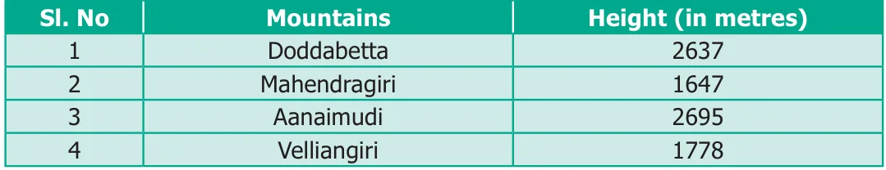
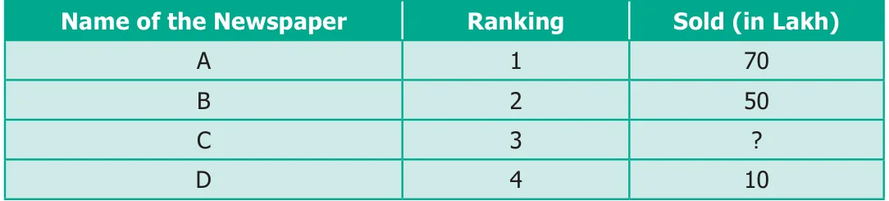

<!DOCTYPE html>
<html lang="en">
<head>
<meta charset="UTF-8">
<meta name="viewport" content="width=device-width,initial-scale=1">
<title>Exercise 1.2 — Numbers</title>
<meta name="description" content="Class 6 Mathematics · Term 1 · Numbers · Exercise 1.2">
<link rel="icon" href="data:image/svg+xml,<svg xmlns='http://www.w3.org/2000/svg' viewBox='0 0 100 100'><text y='.9em' font-size='90'>📘</text></svg>">
<link rel="stylesheet" href="../../../assets/book.css">
<link rel="stylesheet" href="https://cdn.jsdelivr.net/npm/katex@0.16.11/dist/katex.min.css" crossorigin="anonymous">
</head>
<body>
<header class="topbar">
<div class="topbar-in">
  <div class="crumb">
    <span class="c1"><a href="../../../index.html">Library</a> · <a href="../../index.html">Class 6 Mathematics · Term 1</a></span>
    <span class="c2">Numbers · Exercise 1.2</span>
  </div>
  <a class="tb-btn" data-nav="prev" href="../../01-numbers/06-creating-new-numbers-1.5/index.html" title="1.5 Creating New Numbers">←</a>
  <details class="drawer"><summary class="tb-btn" title="Sections in this chapter">☰</summary>
<div class="drawer-panel"><div class="dh">Numbers</div><a href="../01-introduction-1.1/index.html">1.1 Introduction</a><a href="../02-formation-of-large-numbers-1.2/index.html">1.2 Formation of large numbers</a><a href="../03-place-value-chart-1.3/index.html">1.3 Place Value Chart</a><a href="../04-exercise-1.1/index.html">Exercise 1.1</a><a href="../05-comparison-of-numbers-1.4/index.html">1.4 Comparison of Numbers</a><a href="../06-creating-new-numbers-1.5/index.html">1.5 Creating New Numbers</a><a href="../07-exercise-1.2/index.html" aria-current="page">Exercise 1.2</a><a href="../08-use-of-large-numbers-in-daily-life-situations-1.6/index.html">1.6 Use of Large Numbers in Daily Life Situations</a><a href="../09-order-of-operations-1.7/index.html">1.7 Order of Operations</a><a href="../10-exercise-1.3/index.html">Exercise 1.3</a><a href="../11-estimation-of-numbers-1.8/index.html">1.8 Estimation of numbers</a><a href="../12-exercise-1.4/index.html">Exercise 1.4</a><a href="../13-whole-numbers-1.9/index.html">1.9 Whole Numbers</a><a href="../14-properties-of-whole-numbers-1.10/index.html">1.10 Properties of Whole Numbers</a><a href="../15-exercise-1.5/index.html">Exercise 1.5</a><a href="../16-exercise-1.6/index.html">Exercise 1.6; Miscellaneous Practice Problems</a><a href="../17-challenging-problems/index.html">Challenging Problems</a><a href="../18-summary/index.html">Summary</a><a href="../19-ict-corner/index.html">ICT Corner</a></div></details>
  <a class="tb-btn" data-nav="next" href="../../01-numbers/08-use-of-large-numbers-in-daily-life-situations-1.6/index.html" title="1.6 Use of Large Numbers in Daily Life Situations">→</a>
  <button class="tb-btn" data-theme-toggle title="Toggle light / dark" aria-label="Toggle light or dark theme">◐</button>
</div>
<div class="progress"><span style="width:9.6%"></span></div>
</header>
<main class="wrap">
<div class="sec-head">
  <p class="eyebrow"><a href="../index.html">Chapter 1 · Numbers</a></p>
  <h1>Exercise 1.2</h1>
  <p class="sec-meta">Textbook pages 13–14 · 3 figures</p>
</div>
<article class="prose">
<p>Impact of Place Value</p>
<p>Consider the 4-digit number 3795. When we exchange the digits of two places, the number either becomes larger or smaller. For example, the given number is 3795. If the digits 9 and 5 are exchanged, then the number is 3759. This number is less than the given number. It makes a great impact in the situations like handling currencies.</p>
<h4 class="callout-h" id="s-try-these">TRY THESE</h4>
<ul class="qlist">
<li><span class="mk">●</span><span class="lt">In the same way, make different 4-digit numbers by exchanging the digits and check</span></li>
</ul>
<p>every time whether the number made is small or big.</p>
<ul class="qlist">
<li><span class="mk">●</span><span class="lt">Pedometer used in walking practice contains 5 digit number.</span></li>
</ul>
<p>What could be the largest measure?</p>
<figure class="fig"></figure>
<ul class="qlist">
<li><span class="mk">1.</span><span class="lt">Fill in the blanks with &gt; or &lt; or =.</span></li>
<li><span class="mk">(i)</span><span class="lt">48792 _____ 48972</span></li>
<li><span class="mk">(ii)</span><span class="lt">1248654 _____ 1246854</span></li>
<li><span class="mk">(iii)</span><span class="lt">658794 _____ 658794</span></li>
<li><span class="mk">2.</span><span class="lt">Say True or False.</span></li>
<li><span class="mk">(i)</span><span class="lt">The difference between the smallest number of seven digits and the largest</span></li>
</ul>
<p>number of six digits is 10.</p>
<ul class="qlist">
<li><span class="mk">(ii)</span><span class="lt">The largest 4-digit number formed by the digits 8, 6, 0, 9 using each digit only</span></li>
</ul>
<p>once is 9086.</p>
<ul class="qlist">
<li><span class="mk">(iii)</span><span class="lt">The total number of 4 digit numbers is 9000.</span></li>
<li><span class="mk">3.</span><span class="lt">Of the numbers 1386787215, 137698890, 86720560, which one is the largest? Which</span></li>
</ul>
<p>one is the smallest ?</p>
<ul class="qlist">
<li><span class="mk">4.</span><span class="lt">Arrange the following numbers in the descending order:</span></li>
</ul>
<p>128435, 10835, 21354, 6348, 25840</p>
<ul class="qlist">
<li><span class="mk">5.</span><span class="lt">Write any eight digit number with 6 in ten lakhs place and 9 in ten thousandth place.</span></li>
<li><span class="mk">6.</span><span class="lt">Rajan writes a 3-digit number, using the digits 4, 7 and 9. What are the possible</span></li>
</ul>
<p>numbers he can write?</p>
<ul class="qlist">
<li><span class="mk">7.</span><span class="lt">The password to access my ATM card includes the digits 9,4,6 and 8. It is the smallest</span></li>
</ul>
<p>4 digit even number. Find the password of my ATM Card.</p>
<ul class="qlist">
<li><span class="mk">8.</span><span class="lt">Postal Index Number consists of six digits. The first three digits are 6, 3, and 1. Make</span></li>
</ul>
<p>the largest and the smallest Postal Index Number by using the digits 0,3 and 6, each only once.</p>
<ul class="qlist">
<li><span class="mk">9.</span><span class="lt">The heights (in metres) of the mountains in Tamil Nadu are as follows:</span></li>
</ul>
<figure class="fig table-fig wide"></figure>
<p>Which is the highest mountain listed above?</p>
<ul class="qlist">
<li><span class="mk">(ii)</span><span class="lt">Order the mountains from the highest to the lowest.</span></li>
<li><span class="mk">(iii)</span><span class="lt">What is the difference between the heights of the mountains Aanaimudi and</span></li>
</ul>
<p>Mahendragiri?</p>
<p>Objective Type Questions</p>
<ul class="qlist">
<li><span class="mk">10.</span><span class="lt">Which list of numbers is in order from the smallest to the largest?</span></li>
<li><span class="mk">(a)</span><span class="lt">1468, 1486, 1484 (b) 2345, 2435, 2235</span></li>
<li><span class="mk">(c)</span><span class="lt">134205, 134208, 154203 (d) 383553, 383548, 383642</span></li>
<li><span class="mk">11.</span><span class="lt">The Arabian Sea has an area of 1491000 square miles. This area lies between which</span></li>
</ul>
<p>two numbers?</p>
<ul class="qlist">
<li><span class="mk">(a)</span><span class="lt">1489000 and 1492540 (b) 1489000 and 1490540</span></li>
<li><span class="mk">(c)</span><span class="lt">1490000 and 1490100 (d) 1480000 and 1490000</span></li>
<li><span class="mk">12.</span><span class="lt">The chart below shows the number of newspapers sold as per Indian Readership</span></li>
</ul>
<p>Survey in 2018. Which could be the missing number in the table?</p>
<figure class="fig table-fig wide"></figure>
<ul class="qlist">
<li><span class="mk">(a)</span><span class="lt">8 (b) 52 (c) 77 (d) 26</span></li>
</ul>
</article>
<nav class="pager"><a class="" data-nav="prev" href="../../01-numbers/06-creating-new-numbers-1.5/index.html"><span class="dir">← Previous</span><span class="t">1.5 Creating New Numbers</span><span class="ch">Numbers</span></a><a class="nx" data-nav="next" href="../../01-numbers/08-use-of-large-numbers-in-daily-life-situations-1.6/index.html"><span class="dir">Next →</span><span class="t">1.6 Use of Large Numbers in Daily Life Situations</span><span class="ch">Numbers</span></a></nav>
</main><footer class="site">Generated from the source textbook PDFs · text, figures and exercises belong to their respective publishers.</footer><script defer src="https://cdn.jsdelivr.net/npm/katex@0.16.11/dist/katex.min.js" crossorigin="anonymous"></script>
<script defer src="https://cdn.jsdelivr.net/npm/katex@0.16.11/dist/contrib/auto-render.min.js" crossorigin="anonymous"
  onload="renderMathInElement(document.body,{delimiters:[
    {left:'\\(',right:'\\)',display:false},
    {left:'$$',right:'$$',display:true},
    {left:'\\[',right:'\\]',display:true}],throwOnError:false,ignoredTags:['script','noscript','style','textarea','pre','code']})"></script>
<script src="../../../assets/book.js"></script>
<script defer src="../../../../assets/search.js"></script>
</body>
</html>
